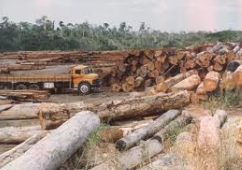
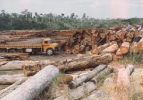

Capítulo 3
Meio ambiente e Ética na Indústria Calçadista
O crescimento populacional global desencadeou um aumento grande na produção industrial em larga escala. Diante disso, os recursos naturais vem sendo consumidos de forma desenfreada, causando grandes impactos nas populações animais e vegetais do planeta.
CONTEXTUALIZANDOAlguns dos problemas que afetam o equilíbrio do meio ambiente:
Crescimento Populacional e industrial: Aumento do número de pessoas no planeta e consequentemente aumento da produção de bens de consumo.
 Crescimento Populacional e industrial:
Aumento do número de pessoas
no planeta e consequentemente aumento da produção de bens de consumo.
Crescimento Populacional e industrial:
Aumento do número de pessoas
no planeta e consequentemente aumento da produção de bens de consumo.
 Desmatamento: Grandes áreas são
desmatadas por vários motivos:
extração de madeiras, criação de pastagens ou agricultura (mau uso da terra),
etc.
OBS: A mecanização agrícola também demanda consumo de petróleo
para funcionamento.
Desmatamento: Grandes áreas são
desmatadas por vários motivos:
extração de madeiras, criação de pastagens ou agricultura (mau uso da terra),
etc.
OBS: A mecanização agrícola também demanda consumo de petróleo
para funcionamento.
 


Exploração excessiva de plantas e animais: Utilização de plantas e animais para alimentação, matéria-prima, etc.
É neste contexto que a ética entra, mas afinal o que a ética tem a ver com o meio ambiente e a indústria calçadista? A indústria das peles e dos couros cresce a cada ano, o que causa maus tratos aos animais, que vivem em condições deploráveis. As indústrias têxteis se desenvolveram muito de uns anos para cá, elaborando imitações de couros de animais, mantendo uma capacidade térmica ainda maior que as peles naturais. Todos os anos a moda das peles continua em evidência, causando grande estima aos mais adeptos desses figurinos, aumentando a comercialização das mesmas. Até nos móveis e artigos de decoração as peles são facilmente encontradas. Além do sofrimento animal, os críticos ao uso de peles argumentam que todo o processo de tratamento do material é insustentável. Para a pele não apodrecer, é preciso prepará-la com produtos químicos danosos ao meio ambiente, e os processos de tingimento têm grande consumo de água.
Fonte: https://g1.globo.com/natureza/desafio-natureza/noticia/2019/07/18/marcas-abandonam-uso-de-pele-animal-para-agradar-millennials-afirma-pesquisadora.ghtmlPara ir além (Prezado aluno, assista aos vídeos abaixo) Você sabia?
Entre as tendências do mercado, a pesquisadora brasileira comenta que opções sintéticas substituem o uso de pele animal com grande qualidade, tanto em termos de acabamento quanto em conforto. Ela explica que as opções conseguem reproduzir pelos originais, longos e curtos, com o mesmo poder de aquecimento. Pinheiro dá o exemplo da iniciativa responsável pelo material Piñatex, um “couro” feito com a fibra das folhas do abacaxi pela designer espanhola Carmen Hijosa. A alternativa ao couro pode ser usada em roupas, sapatos e acessórios, e já faz parte do catálogo de marcas famosas, como Hugo Boss. A fibra da folha do abacaxi é um subproduto da indústria agrícola, o que não gera gastos extras, água ou defensivos agrícolas para sua produção e tem a mesma textura, isolamento e função que o couro animal ou sintético. A produção da marca está localizada nas Filipinas.
Fonte: https://g1.globo.com/natureza/desafio-natureza/noticia/2019/07/18/marcas-abandonam-uso-de-pele-animal-para-agradar-millennials-afirma-pesquisadora.ghtml1) Quais os principais causadores de degradação ambiental, de acordo com o capítulo?
2) Após assistir aos vídeos da página 13 responda:
a) Como o uso excessivo carbono influencia nos seres vivos?
b) De que maneira podemos prejudicar o ciclo do Nitrogênio?
3) Qual o método ecológico usado em substituição do couro de origem animal, apresentado no item (para saber mais)? Explique seu funcionamento.
1) Crescimento populacional e industrial, desmatamento e consumo dos recursos naturais de forma excessiva
2) O Carbono é essencial aos seres vivos, porém o desmatamento e a emissão de combustíveis fósseis prejudica muito o ciclo do carbono, um vez que os vegetais não conseguem processar esse excesso.
3) Significa produzir (calçados e roupas) ou demais objetos a partir de materiais recicláveis e reutilizáveis.